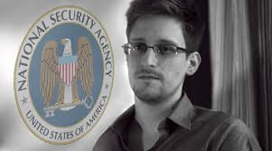

Polémicas
Apple y el caso de Edward Snowdem
Apple fue señalada, entre otras compañías desarrolladoras de productos de tecnología informática de punta, como una de
las involucradas dentro del programa de vigilancia electrónica de alto secreto (Top Secret) PRISM a cargo de NSA

Censura
Apple en el año 2009 censuro todas las aplicaciones de Google y sus servicios como Google voice retirado de la App
Store una vez había sido aprobado sungun muchos medios por la influencia de At y T